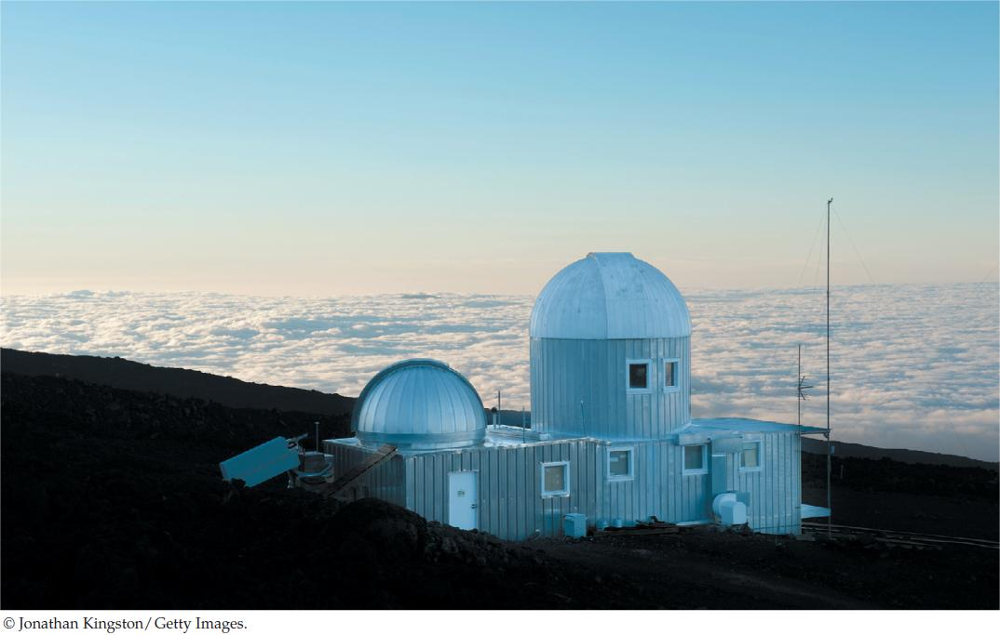

| 45 | The Global Ecosystem |
|
KEY CONCEPTS
45.1Climate and Nutrients Affect Ecosystem Function 45.2Biological, Geological, and Chemical Processes Move Materials through Ecosystems 45.3Certain Biogeochemical Cycles Are Especially Critical for Ecosystems 45.4Biogeochemical Cycles Affect Global Climate 45.5Rapid Climate Change Affects Species and Communities 45.6Ecological Challenges Can Be Addressed through Science and International Cooperation |

The Mauna Loa observatory on the “Big Island” of Hawaii provides scientists with accurate data on the composition of Earth’s atmosphere.
|
The nineteenth century was a golden age for Earth science. Geologists not only deduced the astonishing age of the planet, but also discovered that massive sheets of ice had covered much of Europe and North America only 15,000 years ago—Earth’s climate was once much colder than it is today.
What could cause such dramatic climate change? One possibility, proposed in 1861, pointed to atmospheric gases such as carbon dioxide and water vapor, which by then were known to absorb infrared (heat) radiation. Scientists hypothesized that these gases might influence Earth’s climate by trapping energy in the lower atmosphere. By the end of the nineteenth century, they had outlined a “carbon dioxide theory” to explain how fluctuating atmospheric CO2 concentrations could change the strength of this “greenhouse effect” and explain past ice ages.
Scientists pursuing the carbon dioxide theory had an additional insight. They realized that coal and petroleum contained fossilized carbon from dead plants and animals. Since the Industrial Revolution, humans had been burning these fossil fuels, releasing their carbon as CO2. Might fossil fuel combustion be increasing CO2 in the atmosphere, thus magnifying the greenhouse effect? Some early skeptics felt that any effect of CO2 would be insignificant because it constituted only about 300 parts per million (0.03 percent) of all molecules in the atmosphere. In the 1930s, however, physicists and chemists demonstrated that changes in atmospheric CO2 could indeed affect Earth’s climate. In the 1950s the American scientist Gilbert Plass estimated the rate at which atmospheric CO2 was increasing and used one of the first electronic computers to predict that increased CO2 concentrations could significantly raise the average global temperature.
The challenge now facing scientists was to see if the predicted rise in atmospheric CO2 could be detected. But nobody had yet been able to measure atmospheric CO2 with precision. A young American chemist, Dave Keeling, developed sensitive new instruments and set them up atop Mauna Loa in Hawaii, 4,000 meters above sea level and far from human-generated pollution. Pledging himself to a long-term study, he began taking measurements in 1957 as part of the International Geophysical Year (IGY), one of the first government-supported international scientific collaborations. But the IGY money soon dried up. Undaunted by periods of insufficient funding, Keeling continued his research on atmospheric CO2 and the carbon cycle over the next four decades.
How did Keeling’s research contribute to our understanding of the global ecosystem?